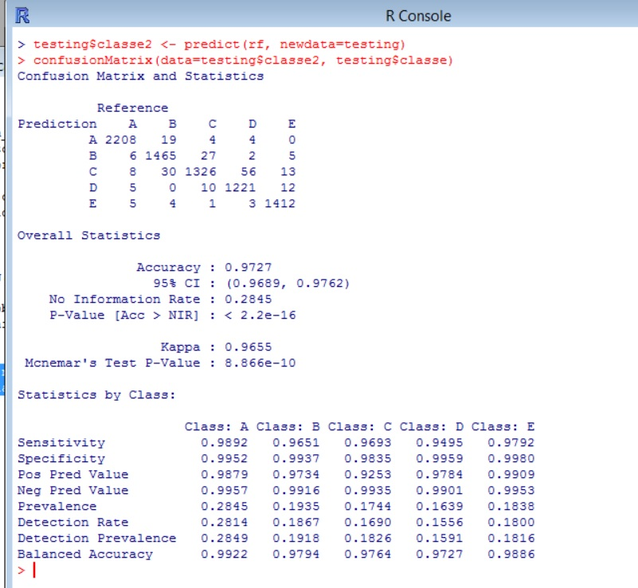
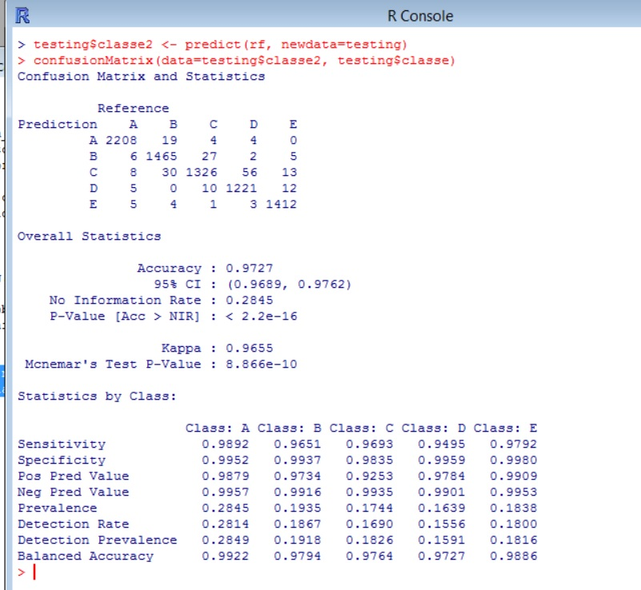

Practical machine learning course project
github repository
-
1: Study the data
Columns like user_name,raw_timestamp_part_1,raw_timestamp_part_2,cvtd_timestamp,new_window,num_window are control attributes that should not be included as predictors.
There are other columns that most of their value are empty. These columns should be excluded too.
As a result, 53 columns were picked in building the model.
columns <- c("roll_belt","pitch_belt","yaw_belt","total_accel_belt","gyros_belt_x","gyros_belt_y","gyros_belt_z","accel_belt_x","accel_belt_y","accel_belt_z","magnet_belt_x","magnet_belt_y","gyros_arm_x","gyros_arm_y","gyros_arm_z","accel_arm_x","accel_arm_y","accel_arm_z","magnet_arm_x","magnet_arm_y","magnet_arm_z","magnet_belt_z","roll_arm","pitch_arm","yaw_arm","total_accel_arm","roll_dumbbell","pitch_dumbbell","yaw_dumbbell","total_accel_dumbbell","gyros_dumbbell_x","gyros_dumbbell_y","gyros_dumbbell_z","accel_dumbbell_x","accel_dumbbell_y","accel_dumbbell_z","magnet_dumbbell_x","magnet_dumbbell_y","magnet_dumbbell_z","roll_forearm","pitch_forearm","yaw_forearm","total_accel_forearm","gyros_forearm_x","gyros_forearm_y","gyros_forearm_z","accel_forearm_x","accel_forearm_y","accel_forearm_z","magnet_forearm_x","magnet_forearm_y","magnet_forearm_z","classe")
-
2: Read/split data
data <- read.csv('pml-training.csv')[columns]
inTraining <- createDataPartition(data$classe, p=0.6, list=FALSE)
training <- data[inTraining,]
testing <- data[-inTraining,]
testSet <-read.csv('pml-testing.csv')[columns[-53]]
-
3: Pre-process
Some columns are hightly correlated, pre-processing with "PCA" can be used to improve performace.
abs(cor(training[-53]))
-
4: cross-valiadtion
ctrl <- trainControl(method="oob", number=10,repeats=1)
I have tried "cv" and "oob", then chose "oob" for cross-validation method since it was a little bit more accurate.
Set fold to 10 made to speed up training time while still generating a very accurate result.
-
5: Model
ctrl <- trainControl(method="oob", number=10,repeats=1)
rf <- train(classe ~., data=training, method="rf", preProcess="pca", trControl=ctrl)
The model was chosen to be random forest for the following reason
-
This is a classifcation problem
-
Random forest is very accurate
-
It has an effective method for estimating missing data and maintains accuracy when a large proportion of the data are missing.*
-
6: Expected out of sample error

The training time was less than 3mins on a 3 Cores + 14G RAM windows 8.1 hyper-v virtual machine.
The finalModel had oob estimate 2.94%.
I have also tried repeats = 5, number =20. The oob was improved little but training time increased significatenly.
-
7: Predict on splitted testing data

The accuracy on testing set was 97.27%
-
1: Study the data
Columns like user_name,raw_timestamp_part_1,raw_timestamp_part_2,cvtd_timestamp,new_window,num_window are control attributes that should not be included as predictors. There are other columns that most of their value are empty. These columns should be excluded too. As a result, 53 columns were picked in building the model.
columns <- c("roll_belt","pitch_belt","yaw_belt","total_accel_belt","gyros_belt_x","gyros_belt_y","gyros_belt_z","accel_belt_x","accel_belt_y","accel_belt_z","magnet_belt_x","magnet_belt_y","gyros_arm_x","gyros_arm_y","gyros_arm_z","accel_arm_x","accel_arm_y","accel_arm_z","magnet_arm_x","magnet_arm_y","magnet_arm_z","magnet_belt_z","roll_arm","pitch_arm","yaw_arm","total_accel_arm","roll_dumbbell","pitch_dumbbell","yaw_dumbbell","total_accel_dumbbell","gyros_dumbbell_x","gyros_dumbbell_y","gyros_dumbbell_z","accel_dumbbell_x","accel_dumbbell_y","accel_dumbbell_z","magnet_dumbbell_x","magnet_dumbbell_y","magnet_dumbbell_z","roll_forearm","pitch_forearm","yaw_forearm","total_accel_forearm","gyros_forearm_x","gyros_forearm_y","gyros_forearm_z","accel_forearm_x","accel_forearm_y","accel_forearm_z","magnet_forearm_x","magnet_forearm_y","magnet_forearm_z","classe") -
2: Read/split data
data <- read.csv('pml-training.csv')[columns] inTraining <- createDataPartition(data$classe, p=0.6, list=FALSE) training <- data[inTraining,] testing <- data[-inTraining,] testSet <-read.csv('pml-testing.csv')[columns[-53]] -
3: Pre-process
Some columns are hightly correlated, pre-processing with "PCA" can be used to improve performace.
abs(cor(training[-53])) -
4: cross-valiadtion
ctrl <- trainControl(method="oob", number=10,repeats=1) I have tried "cv" and "oob", then chose "oob" for cross-validation method since it was a little bit more accurate. Set fold to 10 made to speed up training time while still generating a very accurate result.
-
5: Model
ctrl <- trainControl(method="oob", number=10,repeats=1) rf <- train(classe ~., data=training, method="rf", preProcess="pca", trControl=ctrl) The model was chosen to be random forest for the following reason
- This is a classifcation problem
- Random forest is very accurate
- It has an effective method for estimating missing data and maintains accuracy when a large proportion of the data are missing.*
-
6: Expected out of sample error
The training time was less than 3mins on a 3 Cores + 14G RAM windows 8.1 hyper-v virtual machine. The finalModel had oob estimate 2.94%. I have also tried repeats = 5, number =20. The oob was improved little but training time increased significatenly.
-
7: Predict on splitted testing data
The accuracy on testing set was 97.27%